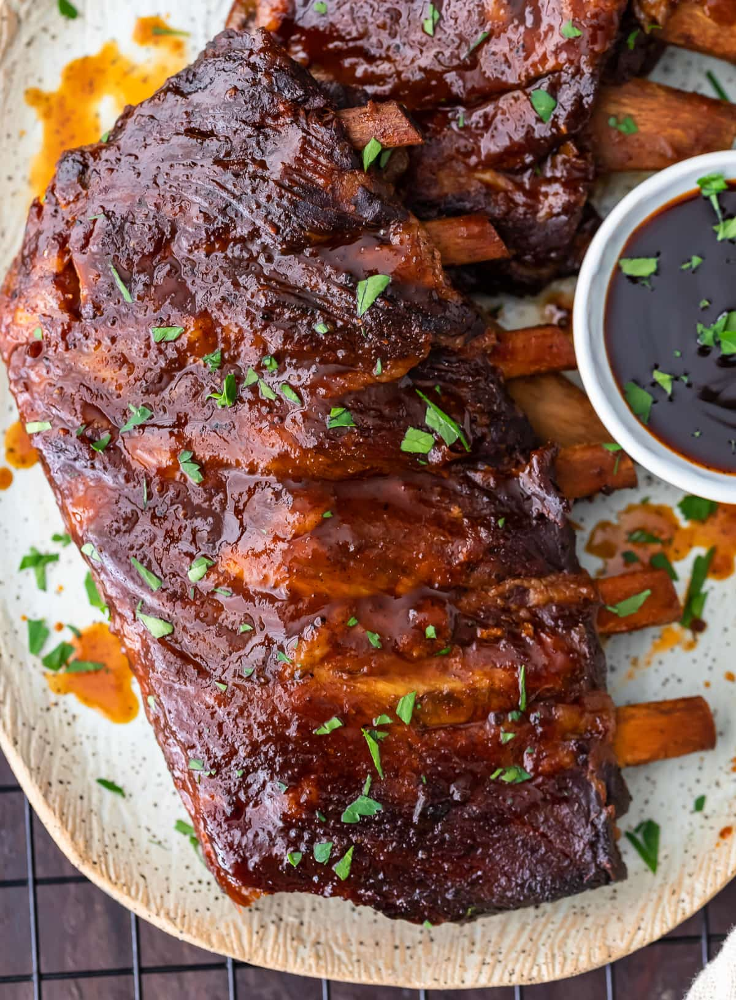

Slow Cooker Barbecue Ribs

Description
Slow Cooker Barbecue Ribs easy and absolutely DELICIOUS! Fall-off-the-bone tender ribs finished off in the oven to create the best,
barbecue sticky glaze and caramelised edges!
The 4-ingredient marinade is the hands down the best marinade smothered on ribs.
Ingredients
- 2 cups (500ml) barbecue sauce
- 2 tablespoons brown sugar
- 3 tablespoons minced garlic
- 2 teaspoons Worcestershire sauce
- 1 tablespoon cayenne pepper (optional for a hint of spice)
- 2 kg (4 pounds) baby back pork ribs
- Salt , to taste
Instructions
- Spray inside of a 6-quart slow cooker with cooking spray.
- Remove inner skin (membrane) from ribs and place ribs in slow cooker. Discard skin.
- Combine bbq sauce, brown sugar, garlic, Worcestershire sauce and cayenne pepper in a small bowl. Mix well to combine and completely cover with half of the sauce.
- Season with a good amount of salt and pepper; cover with lid and cook on low setting for 7-9 hours or high setting for 3-5 hours *see notes.
Refrigerate remaining sauce to use later.
- When ribs are tender and falling apart, transfer onto an oven tray (or baking sheet), lined with parchment paper. (Lift them carefully as the meat will be very tender
and falling off the bone).
- Pour half of the juices from the slow cooker bowl into the remaining sauce. Baste ribs with half of the sauce and broil (grill) in preheated oven at 400°F (220°C) for about 10 minutes
or until beginning to char and crisp on the edges.
- Serve ribs with remaining sauce.